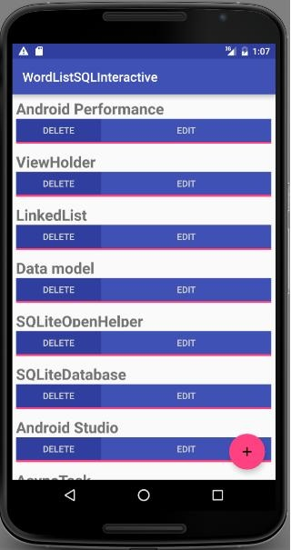

Ces travaux pratiques se base sur le cours de base pour les développeurs Android fourni par Google afin de les préparer pour le test de certification Associate Android Developer. Vous obtiendrez le plus de valeur de ce TP si vous travaillez successivement dans les codelabs.
A SQLite database is a good storage solution when you have structured data that you need to store persistently and access, search, and change frequently.
When you use a SQLite database, all interactions with the database are through an instance of theSQLiteOpenHelper class which executes your requests and manages your database for you.
In this practical, you will create a SQLite database for a set of data, display retrieved data in a RecyclerView, add functionality to add, delete, and edit the data in the RecyclerView and store it in the database.
Note: A database that persistently stores your data and abstracts your data into a data model is sufficient for small Android apps with minimal complexity. In later chapters, you will learn to architect your app using loaders and content providers to further separate data from the user interface. These classes will help to move work off the UI thread to assist in making the user's experience as smooth and natural as possible. In addition to improving the user experience by removing a potential performance issue, they improve your ability to extend and maintain your app.
Important: In this practical, the SQLiteOpenHelper executes database operations in the main thread. In a production app, where database operations might take quite some time, you would perform these operations on a background thread, for example, using aloader such as AsyncTaskLoader and CursorLoader.
Vous devriez être familier avec:
You also need a basic understanding of SQL databases, how they are organized into tables of rows and columns, and the
SQL language. See the SQLite Primer
You start with an app that is the same as the RecyclerView word list app you created previously, with additional user
interface elements already added for you, so that you can focus on the database code.
You will extend and modify the base app to:
Starting from a skeleton app, you will add functionality to:

Minimum SDK Version is API15: Android 4.0.3 IceCreamSandwich and *target* SDK is the current version of Android.
In order to save you some work, in particular writing database-unrelated activities and user interface code, you need to get the starter code for this practical.
Android apps can use standard SQLite databases to store data. This practical does not teach SQLite, but shows how to use it in an Android app.
SQLOpenHelper is a utility class in the Android SDK for interacting with a SQLite database object. It includes onCreate() and onUpdate() methods that you must implement, and insert, delete, update, and query convenience methods for all your database interactions.
The SQLOpenHelper class takes care of opening the database if it exists, creating it if it does not, and upgrading it as necessary.
Note: You can have more than one database per app, and more than one open helper managing them. However consider creating multiple tables in the same database instead of using multiple databases for performance and architectural simplicity
The first step in adding a database to your code is always to create a subclass of SQLiteOpenHelper and implement its methods.
public class WordListOpenHelper extends SQLiteOpenHelper {}WordListOpenHelper. (You will define the undefined constants next.)public WordListOpenHelper(Context context) {
super(context, DATABASE_NAME, null, DATABASE_VERSION);
}WordListOpenHelper class, define the constants for the tables, rows, and columns as shown in the code below. This should get rid of all the errors.// It's a good idea to always define a log tag like this.
private static final String TAG = WordListOpenHelper.class.getSimpleName();
// has to be 1 first time or app will crash
private static final int DATABASE_VERSION = 1;
private static final String WORD_LIST_TABLE = "word_entries";
private static final String DATABASE_NAME = "wordlist";
// Column names...
public static final String KEY_ID = "_id";
public static final String KEY_WORD = "word";
// ... and a string array of columns.
private static final String[] COLUMNS = { KEY_ID, KEY_WORD };SQL queries can become quite complex. It is a best practice to construct the queries separately from the code that uses them. This increases code readability and helps with debugging.
Continue adding code to WordListOpenHelper.java:
// Build the SQL query that creates the table.
private static final String WORD_LIST_TABLE_CREATE =
"CREATE TABLE " + WORD_LIST_TABLE + " (" +
KEY_ID + " INTEGER PRIMARY KEY, " +
// id will auto-increment if no value passed
KEY_WORD + " TEXT );";private SQLiteDatabase mWritableDB;
private SQLiteDatabase mReadableDB;onCreate method, add code to create a database and the table (The helper class does not create another database, if one already exists.)@Override
public void onCreate(SQLiteDatabase db) {
db.execSQL(WORD_LIST_TABLE_CREATE);
}To create the database, create an instance of the WordListOpenHelper class you just wrote.
private WordListOpenHelper mDB;mDB with an instance of WordListOpenHelper. This calls onCreate of the WordListOpenHelper, which creates the database.mDB = new WordListOpenHelper(this);mDB is an instance for WordListOpenHelper.The list of words for your app could come from many sources. It could be completely user created, or downloaded from the internet, or generated from a file that's part of your APK. For this practical, you will seed your database with a small amount of hard-coded data.
Note that acquiring, creating, and formatting data is a whole separate topic that is not covered in this course.
onCreate, after creating the database, add a function call tofillDatabaseWithData(db); Next, implement the fillDatabaseWithData() method in WordListOpenHelper.
private void fillDatabaseWithData(SQLiteDatabase db){}String[] words = {"Android", "Adapter", "ListView", "AsyncTask",
"Android Studio", "SQLiteDatabase", "SQLOpenHelper",
"Data model", "ViewHolder","Android Performance",
"OnClickListener"};// Create a container for the data.
ContentValues values = new ContentValues();WORD_LIST_TABLE .String nullColumnHack . It's a SQL workaround that allows you to insert empty rows. See the documentation for insert(). Use null for this argument.KEY_WORD set earlier; for tables with multiple columns, add the values for each column to this container.for (int i=0; i < words.length; i++) {
// Put column/value pairs into the container.
// put() overrides existing values.
values.put(KEY_WORD, words[i]);
db.insert(WORD_LIST_TABLE, null, values);
}A data model is a class that encapsulates a complex data structure and provides an API for accessing and manipulating the data in that structure. You need a data model to pass data retrieved from the database to the UI.
For this practical, the data model only contains the word and its id. While the unique id will be generated by the database, you need a way of passing the id to the user interface. This will identify the word the user is changing.
WordItem .private int mId;
private String mWord;Solution:
public class WordItem {
private int mId;
private String mWord;
public WordItem() {}
public int getId() {return this.mId;}
public String getWord() {return this.mWord;}
public void setId(int id) {this.mId = id;}
public void setWord(String word) {this.mWord = word;}
}The query() method retrieves rows from the database as selected by a SQL query.
For this sample, in order to display words in the RecyclerView, we need to get them from the database, one at a time, as needed. The word needed is identified by its position in the view.
As such, the query method has a parameter for the requested position and returns a WordItem.
public WordItem query(int position) {
}LIMIT with position as the row, and 1 as the number of rows.String query = "SELECT * FROM " + WORD_LIST_TABLE +
" ORDER BY " + KEY_WORD + " ASC " +
"LIMIT " + position + ",1";Cursor variable to null to hold the result from the database.Cursor cursor = null;The SQLiteDatabase always presents the results as a Cursorin a table format that resembles of a SQL database.
A cursor is a pointer into a row of structured data. You can think of it as an array of rows. The Cursor class provides methods for moving the cursor through that structure, and methods to get the data from the columns of each row.
WordItem entry.WordItem entry = new WordItem();try {} catch (Exception e) {} finally {}if (mReadableDB == null) {
mReadableDB = getReadableDatabase();
}cursor = mReadableDB.rawQuery(query, null);The open helper query method can construct a SQL query string and send it as a rawQuery to the database which returns a cursor. If your data is supplied by your app, and under your full control, you can use raw query().
cursor.moveToFirst();WordItem entry to the values returned by the cursor.entry.setId(cursor.getInt(cursor.getColumnIndex(KEY_ID)));
entry.setWord(cursor.getString(cursor.getColumnIndex(KEY_WORD)));Log.d(TAG, "EXCEPTION! " + e);cursor.close();
return entry;Solution:
public WordItem query(int position) {
String query = "SELECT * FROM " + WORD_LIST_TABLE +
" ORDER BY " + KEY_WORD + " ASC " +
"LIMIT " + position + ",1";
Cursor cursor = null;
WordItem entry = new WordItem();
try {
if (mReadableDB == null) {
mReadableDB = getReadableDatabase();
}
cursor = mReadableDB.rawQuery(query, null);
cursor.moveToFirst();
entry.setId(cursor.getInt(cursor.getColumnIndex(KEY_ID)));
entry.setWord(cursor.getString(cursor.getColumnIndex(KEY_WORD)));
} catch (Exception e) {
Log.d(TAG, "QUERY EXCEPTION! " + e.getMessage());
} finally {
cursor.close();
return entry;
}
}Every SQLiteOpenHelper must implement the onUpgrade() method, which determines what happens if the database version number changes. This may happen if you have existing users of your app that use an older version of the database. This method is triggered when a database is first opened. The customary default action is to delete the current database and recreate it.
Important: While it's OK to drop the table in a sample app, In a production app you need to carefully migrate the user's valuable data.
You can use the code below to implement the onUpgrade() method for this sample.
Boilerplate code for onUpgrade():
@Override
public void onUpgrade(SQLiteDatabase db, int oldVersion, int newVersion) {
Log.w(WordListOpenHelper.class.getName(),
"Upgrading database from version " + oldVersion + " to "
+ newVersion + ", which will destroy all old data");
db.execSQL("DROP TABLE IF EXISTS " + WORD_LIST_TABLE);
onCreate(db);
}You now have a database, with data. Next, you will update the WordListAdapter and MainActivity to fetch and display this data.
onBindViewHolder replace the code that displays mock data with code to get an item from the database and display it. You will notice an error on mDB.WordItem current = mDB.query(position);
holder.wordItemView.setText(current.getWord());mDB as an instance variable.WordListOpenHelper mDB;mDB, change the constructor for WordListAdapter and add a second parameter for the WordListOpenHelper.mDB. Your constructor should look like this:public WordListAdapter(Context context, WordListOpenHelper db) {
mInflater = LayoutInflater.from(context);
mContext = context;
mDB = db;
}This generates an error in MainActivity, because you added an argument to the WordListAdapter constructor.
mDB argument.mAdapter = new WordListAdapter (this, mDB);When the user clicks the FAB, an activity opens that lets them enter a word that gets added to the database when they click save.
The starter code provides you with the click listener and the EditWordActivity started by clicking the FAB. You will add the database specific code and tie the pieces together, from the bottom up, like you just did with the query method.
In WordListOpenHelper:
insert() method with the following signature. The user supplies a word, and the method returns the id for the new entry. Generated id's can be big, so insert returns a number of type long.public long insert(String word){}long newId = 0;ContentValues value for the row data.ContentValues values = new ContentValues();
values.put(KEY_WORD, word);try {} catch (Exception e) {}if (mWritableDB == null) {
mWritableDB = getWritableDatabase();
}newId = mWritableDB.insert(WORD_LIST_TABLE, null, values);Log.d(TAG, "INSERT EXCEPTION! " + e.getMessage());return newId;Solution:
public long insert(String word){
long newId = 0;
ContentValues values = new ContentValues();
values.put(KEY_WORD, word);
try {
if (mWritableDB == null) {
mWritableDB = getWritableDatabase();
}
newId = mWritableDB.insert(WORD_LIST_TABLE, null, values);
} catch (Exception e) {
Log.d(TAG, "INSERT EXCEPTION! " + e.getMessage());
}
return newId;
}The starter code comes with an EditWordActivity that gets a word from the user and returns it to the main activity. In MainActivity, you just have to fill in the onActivityResult() method.
if (requestCode == WORD_EDIT) {
if (resultCode == RESULT_OK) {
String word = data.getStringExtra(EditWordActivity.EXTRA_REPLY);if (!TextUtils.isEmpty(word)) {
int id = data.getIntExtra(WordListAdapter.EXTRA_ID, -99);
if (id == WORD_ADD) {
mDB.insert(word);
}mAdapter.notifyDataSetChanged();} else {
Toast.makeText(
getApplicationContext(),
R.string.empty_not_saved,
Toast.LENGTH_LONG).show();
}
}
}Solution:
if (requestCode == WORD_EDIT) {
if (resultCode == RESULT_OK) {
String word = data.getStringExtra(EditWordActivity.EXTRA_REPLY);
// Update the database
if (!TextUtils.isEmpty(word)) {
int id = data.getIntExtra(WordListAdapter.EXTRA_ID, -99);
if (id == WORD_ADD) {
mDB.insert(word);
}
// Update the UI
mAdapter.notifyDataSetChanged();
} else {
Toast.makeText(
getApplicationContext(),
R.string.empty_not_saved,
Toast.LENGTH_LONG).show();
}
}
}In order for the new items to be displayed properly, getItemCount in WordListAdapter has to return the actual number of entries in the database instead of the number of words in the starter list of words.
getItemCount to the code below, which will trigger an error.return (int) mDB.count();WordListOpenHelper and implement count() to return the number of entries in the database.public long count(){
if (mReadableDB == null) {
mReadableDB = getReadableDatabase();
}
return DatabaseUtils.queryNumEntries(mReadableDB, WORD_LIST_TABLE);
}To implement the delete functionality you need to:
delete() method in WordListOpenHelperDELETE button in WordListAdapterYou use the delete() method on SQLiteDatabase to delete an entry in the database. Add a method delete to the WordListOpenHelper that:
delete(), which takes an int argument for the id of the item to delete, and returns the number of rows deleted.public int delete(int id) {}int deleted = 0;try {} catch (Exception e) {}if (mWritableDB == null) {
mWritableDB = getWritableDatabase();
}WORD_LIST_TABLE, selecting by KEY_ID and passing the value of the id as the argument. The "?" is a placeholder that gets filled with the string. This is a more secure way of building queries.deleted = mWritableDB.delete(WORD_LIST_TABLE,
KEY_ID + " = ? ", new String[]{String.valueOf(id)});Log.d (TAG, "DELETE EXCEPTION! " + e.getMessage());return deleted;Solution:
public int delete(int id) {
int deleted = 0;
try {
if (mWritableDB == null) {
mWritableDB = getWritableDatabase();
}
deleted = mWritableDB.delete(WORD_LIST_TABLE, //table name
KEY_ID + " =? ", new String[]{String.valueOf(id)});
} catch (Exception e) {
Log.d (TAG, "DELETE EXCEPTION! " + e.getMessage());
}
return deleted;
}You can now add a click handler to the DELETE button that calls the delete() method you just wrote.
Take a look at the MyButtonOnClickListener class in your starter code. The MyButtonOnClickListener class implements a click listener that stores the id, and the word that you need to make changes to the database.
Each view holder, when attached (bound) to the RecyclerView in the onBindViewHolder method of WordListAdapter, needs to also attach a click listener to the DELETE button, passing the id, and word to the MyButtonOnClickListener constructor. These values are then used by the onClick handler to delete the correct item and notify the adapter, which item has been removed.
Note that you cannot use the position argument passed into onBindViewHolder, because it may be stale by the time the click handler is called. You have to keep a reference to the view holder and get the position with getAdapterPosition().
Solution:
// Keep a reference to the view holder for the click listener
final WordViewHolder h = holder; // needs to be final for use in callback
// Attach a click listener to the DELETE button.
holder.delete_button.setOnClickListener(
new MyButtonOnClickListener(current.getId(), null) {
@Override
public void onClick(View v ) {
int deleted = mDB.delete(id);
if (deleted >= 0)
notifyItemRemoved(h.getAdapterPosition());
}
});To update existing words you have to:
update() method to WordListOpenHelper. EDIT button of your view.You use the update() method on SQLiteDatabase to update an existing entry in the database.
WordListOpenHelper that:String word for its arguments and returns an integer.public int update(int id, String word)mNumberOfRowsUpdated to -1.int mNumberOfRowsUpdated = -1;if (mWritableDB == null) {
mWritableDB = getWritableDatabase();
}ContentValues and at the KEY_WORD word to it.ContentValues values = new ContentValues();
values.put(KEY_WORD, word);db.update using the following arguments:mNumberOfRowsUpdated = db.update(WORD_LIST_TABLE,
values, // new values to insert
// selection criteria for row (the _id column)
KEY_ID + " = ?",
//selection args; value of id
new String[]{String.valueOf(id)});Log.d (TAG, "UPDATE EXCEPTION: " + e.getMessage());return mNumberOfRowsUpdated;Solution:
public int update(int id, String word) {
int mNumberOfRowsUpdated = -1;
try {
if (mWritableDB == null) {
mWritableDB = getWritableDatabase();
}
ContentValues values = new ContentValues();
values.put(KEY_WORD, word);
mNumberOfRowsUpdated = mWritableDB.update(WORD_LIST_TABLE,
values,
KEY_ID + " = ?",
new String[]{String.valueOf(id)});
} catch (Exception e) {
Log.d (TAG, "UPDATE EXCEPTION! " + e.getMessage());
}
return mNumberOfRowsUpdated;
}And here is the code for the Edit click listener when we bind the View in the onBindViewHolder method of WordListAdapter. This listener has nothing database specific. It starts the EditWordActivity Activity using an Intent and passes it the current id, position, and word in the Extras.
If you get an error on the EXTRA_POSITION constant, add it with a value of "POSITION",
Solution:
// Attach a click listener to the EDIT button.
holder.edit_button.setOnClickListener(new MyButtonOnClickListener(
current.getId(), current.getWord()) {
@Override
public void onClick(View v) {
Intent intent = new Intent(mContext, EditWordActivity.class);
intent.putExtra(EXTRA_ID, id);
intent.putExtra(EXTRA_POSITION, h.getAdapterPosition());
intent.putExtra(EXTRA_WORD, word);
// Start an empty edit activity.
((Activity) mContext).startActivityForResult(
intent, MainActivity.WORD_EDIT);
}
});As implemented, clicking edit starts an activity that shows the user the current word, and they can edit it. To make the update happen,
onActivityResult method in your MainActivity.else if (id >= 0) {
mDB.update(id, word);
}SQLiteOpenHelper class. This is sufficient for a simple example, like this one. For a more complex app, it is a better practice to separate schema definitions from the rest of the code in a helper class that cannot be instantiated. You will learn how to do that in the chapter on content providers.AsyncTask for operations that take a long time. Use loaders to load large amounts of data.Android Studio project: WordListSql finished
In this chapter, you learned how to
SQLiteDatabase to store user data persistently. SQLiteOpenHelper to manage your database. Retrieve and display data from the databaseAndroid developer documentation: